PromiseHub · Video 59
Review and place applicants
One pipeline for every application, staff notes, and placing young people into cohorts
One pipeline for every application, staff notes, and placing young people into cohorts
GET /applications?status= with the count of each status; a row opens the application.

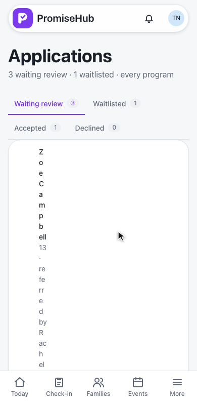
ph-tabs with counts · Referral and Consent needed ph-badges · in More for admins and program directors while Roster is on
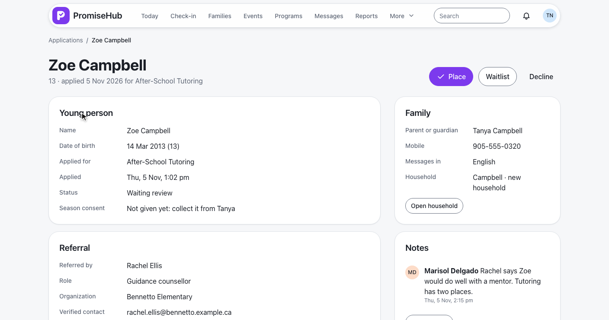
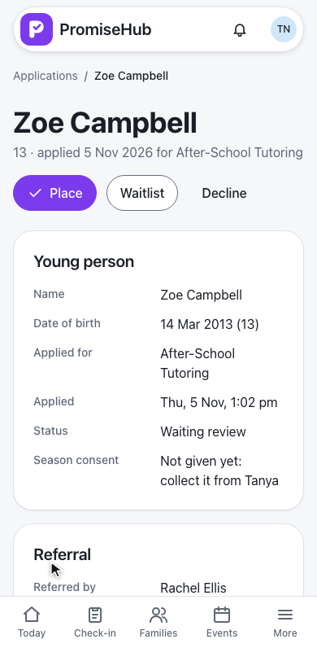
GET /applications/{id} · ph-description-list per card · another organization’s application answers 404
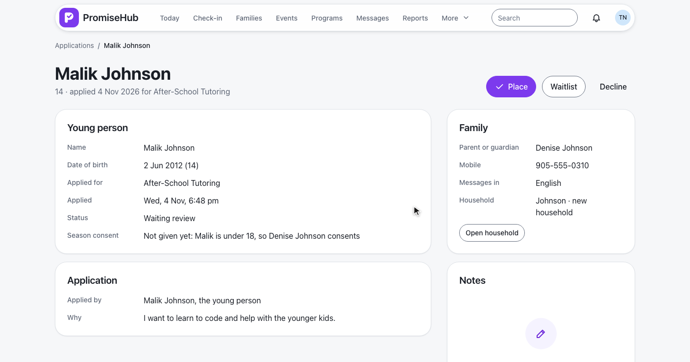
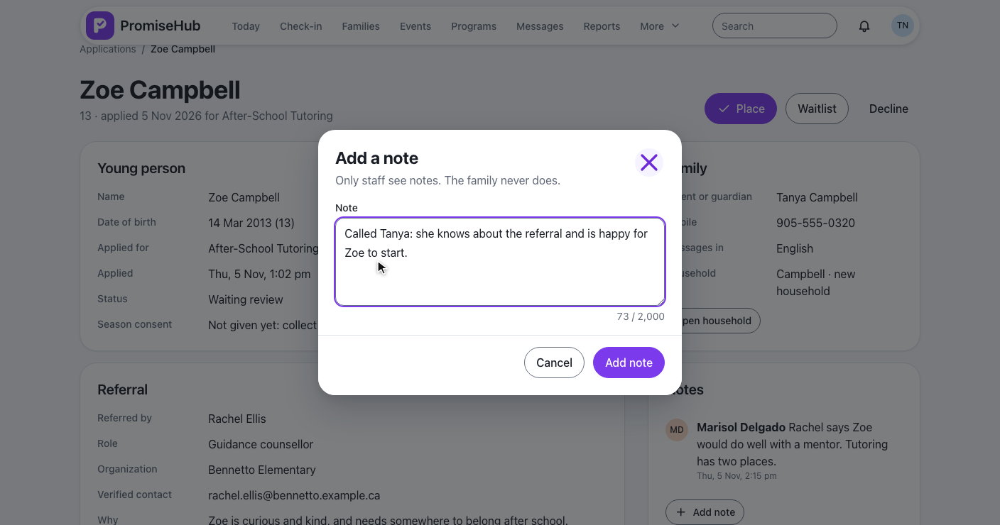
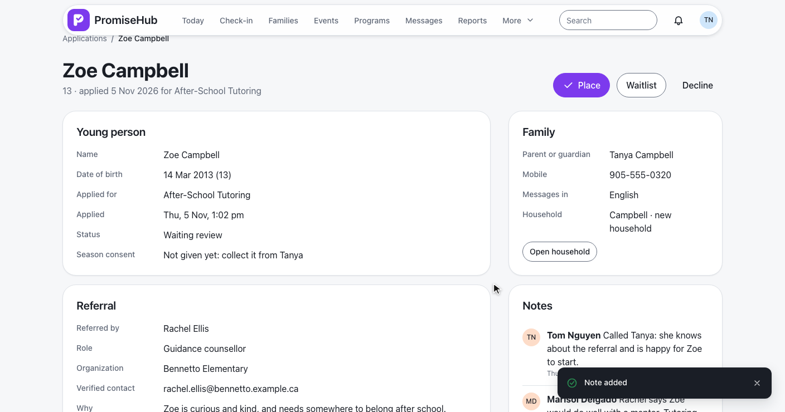
POST /applications/{id}/notes · EnrollmentNote · up to 2,000 characters · audited without the text · ph-timeline
Choose the cohort, invite her as a youth, a note to Tanya, then POST /applications/{id}/place.
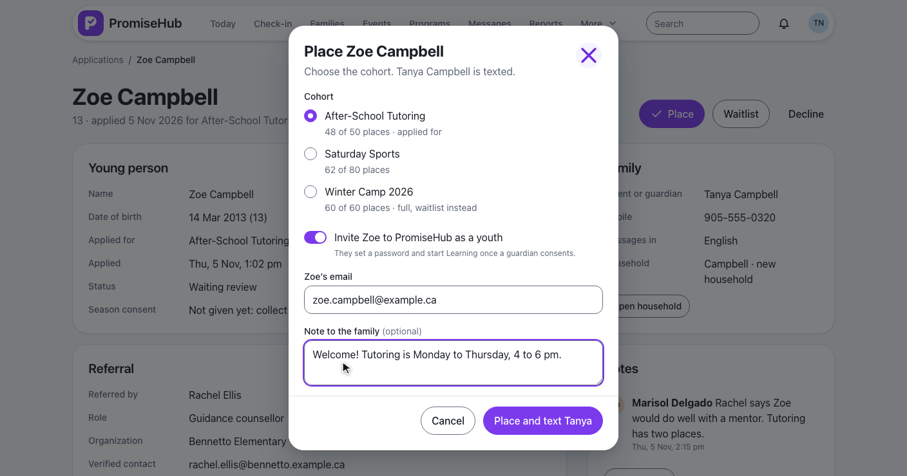
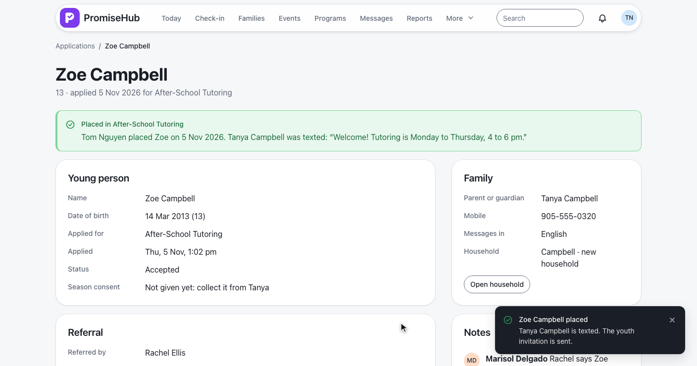
Moves the request · enrolls the child · texts the family · audited as placed · invitation through POST /children/{id}/youth-invitation (ADR 0053)
Malik waitlisted; Kevin declined, first without a reason.
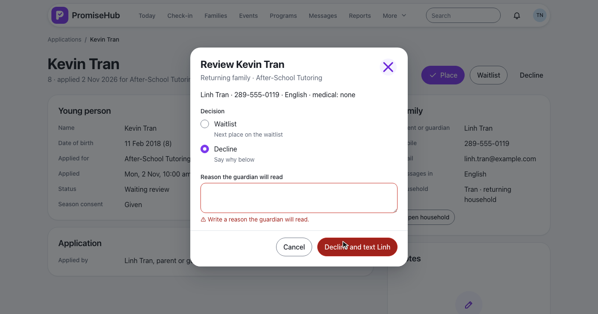
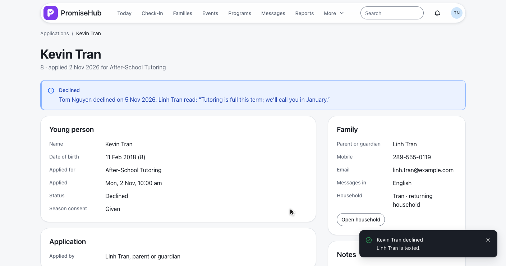
A second decision answers 409 · notes can still be added (L2-072 criterion 7)
All caught up, Try again, not found and a site lead.
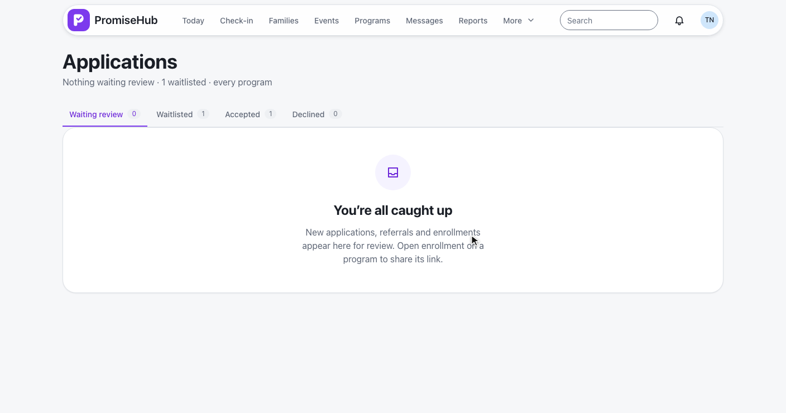
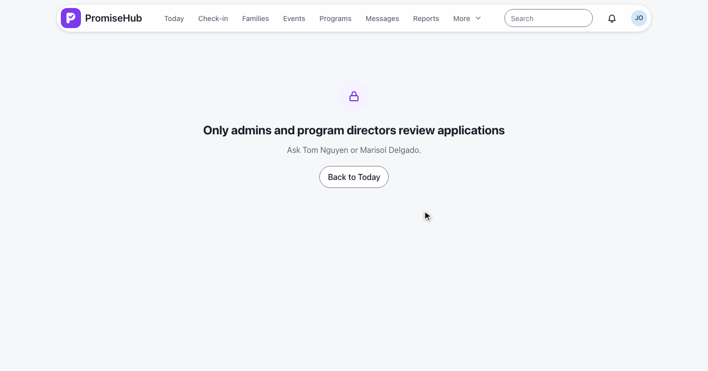
ApplicationReviewTests.cs: list, counts, detail, notes, placing, waitlists, full and archived cohorts, roles, Roster off, tenantse2e/tests/enrollment/applications.spec.ts, application.spec.ts, place.spec.ts, decide.spec.ts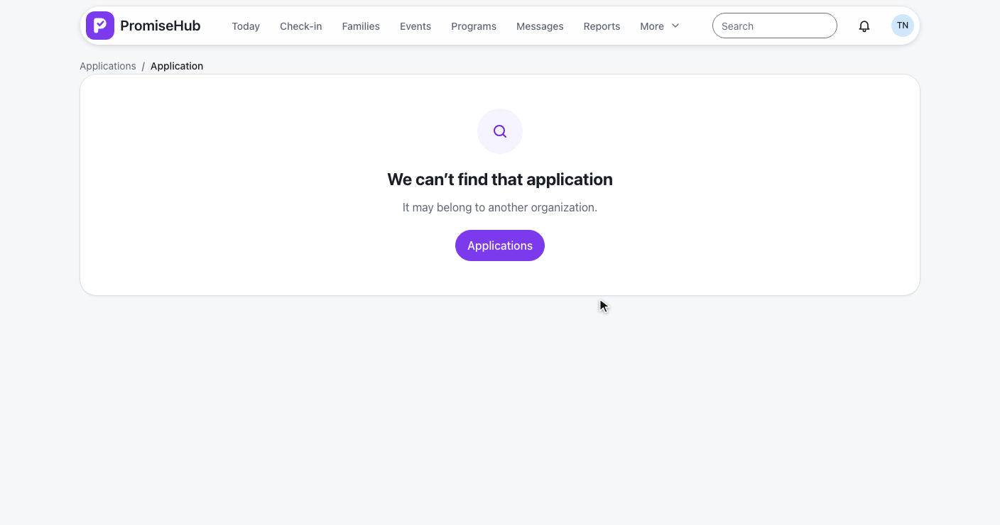
The pipeline and Zoe’s referral at 390 pixels, no sideways scrolling.
Next: manage people